TIPOS DE REDES
INTERNET DE LAS COSAS (IoT)
El IoT es el mundo en el que cada objeto tiene una identidad virtual propia y capacidad potencial para integrarse e interactuar de manera independiente en la Red con cualquier otro individuo, ya sea una maquina o un humano, es decir, se refiere a escenarios en los que la conectividad de red y capacidad de computo se extiende a articulos de uso diario que habitualmente no se consideran computadores, permitiendo asi que estos dispositivos, generen, intercambien y consuman datos con una minima intervencion humana.
Actualmente se estan combinando productos de consumo, bienes, automoviles, componentes industriales, servicios publicos, sensores, y demas objetos de uso cotidiano con conectividad a Internet y potentes capacidades de analisis de datos que prometen transformar el modo en que trabajamos y vivimos.
Estas tendencias del mercado tecnológico incluyen la conectividad omnipresente, la adopción generalizada de redes basadas en el protocolo IP, la economía en la capacidad de cómputo, la miniaturización, los avances en el análisis de datos y el surgimiento de la computación en la nube.
Las implementaciones de la IoT hacen uso de distintos modelos de conectividad, los cuales destacan la flexibilidad en las formas en los que los dispositivos de la IoT pueden conectarse:
• Device-to-Device (dispositivo a dispositivo)
• Device-to-cloud (dispositivo a la nube)
• Device-to-Gateway (Dispositivo a puerta de enlace)
• Back-End Data-Sharing (Intercambio de datos a través del back-end)
Ejemplos de uso:
• Smart Home: Convertir una casa en inteligente es probablemente la aplicación IoT de éxito más popular en este momento. Es más asequible y accesible para los consumidores. Desde el Amazon Echo, Google Home hasta el nuevo Apple HomePod, hay cientos de Apps en el mercado que se pueden controlar con estos dispositivos, utilizando tan sólo la voz de los usuarios, haciendo sus vidas más conectadas que nunca.
• Smart Cities: El IoT tiene el potencial de transformar ciudades enteras resolviendo problemas reales a los que los ciudadanos enfrentan cada día. Con el uso de sensores y datos adecuados, podemos resolver problemas de congestión del tráfico, delincuencia y contaminación.
• Smart Agriculture: Los agricultores están comenzando a implementar tecnología de riego que combina aspersores inteligentes y repositorios de datos sobre los cultivos y las condiciones del suelo. Aprovechan la información meteorológica para determinar la fecha y método de plantación de semillas. También les ayuda a tomar decisiones sobre el uso de herbicidas en un determinado terreno. La información meteorológica y de la calidad del suelo puede ayudar a determinar la cantidad perfecta de agua en cosechas, evitando el error de regar justo antes de la lluvia.
• Coches conectados: Estos vehículos están equipados con acceso a Internet y de sensores de movimiento, proximidad y cámaras. Permiten no sólo poder realizar una conducción autónoma, también dar soporte al conductor si se necesita una reparación. El software que llevan instalados los coches de Tesla permite programar de forma autónoma un sistema de recogida del vehículo y llevarlo a una instalación de Tesla para realizar los ajustes necesarios en su mantenimiento.
• Retail: Una aplicación en Internet de las Cosas (IoT) que aparece para resolver el problema de autenticación, localización y pago en comercios, son los Beacons, pequeños sensores con tecnología bluetooth que se comunican con dispositivos inteligentes tales como smartphones, tablets, o smartwatches, entre otros. Facilitan la localización en interiores y aportan información de ofertas o tiendas a los usuarios.
• Wearables: Relojes, pulseras y gafas inteligentes nos ofrecen nuevas oportunidades de interactuar con nuestro entorno. Nos permiten conocernos mejor, por ejemplo midiendo nuestras biométricas para incrementar nuestro rendimiento deportivo o salud. Y por otro lado, nos dotan de capacidades, como poder ver en smart glasses información sobre nuestro entorno en Realidad Aumentada.
• Sector industrial y manufacturero: La incorporación de sensores IoT, inteligencia artificial y wearables permiten una disminución significativa de tiempos de proceso, mejora en la seguridad de empleados y desplazamiento en la resolución de incidencias. Así se obtiene una disminución de costes y, por lo tanto, un notable aumento en sus beneficios a medio y largo plazo.
La implementación de dispositivos de la IoT promete transformar muchos aspectos de la forma en que vivimos. Los nuevos productos de la IoT (electrodomésticos, componentes de automatización del hogar y dispositivos de gestión e energía con conexión a Internet) nos llevan hacia una idea de la “casa inteligente” que ofrece beneficios tales como la seguridad y eficiencia energética. Dispositivos personales de la IoT (dispositivos portátiles para gestionar y monitorear la actividad física y los dispositivos médicos con conexión a Internet) están transformando la forma en que se ofrecen los servicios de salud. Los sistemas de la IoT como los vehículos conectados en red, los sistemas de tráfico inteligente y los sensores integrados en carreteras y puentes nos acerca más a la visión de “ciudades inteligentes”, que ayudan a minimizar la congestión y el consumo de energía. La tecnología IoT ofrece la posibilidad de transformar la agricultura, la industria y la producción de energía mediante el aumento de la disponibilidad de información a lo largo de la producción por medio de sensores conectados en red.
¿QuUE ES WEARABLE?
Son un conjunto de dispositivos electrónicos que se incorporan en alguna parte del cuerpo humano interactuando de forma continua con el usuario y con otros dispositivos, con el fin de realizar una determinada función, dispositivos tales como relojes inteligentes o smartwatchs, zapatos de deportes con GPS incorporado y pulseras que controlan nuestro estado de salud, entre otros, se hallan cada vez más presentes en nuestras vidas cotidianas.
La tecnología wearable hace referencia a los productos que incorporan un microprocesador y que usamos a diario. Se halla presente en un extenso abanico de campos que satisfacen nuestras necesidades, con el fin de mejorar nuestra calidad de vida estando muy presente en la salud, seguridad de trabajadores, adiestramiento de deportistas, etc.

Estos son algunos de los dispositivos wearable:
• Gafas inteligentes: Google Glass, las primeras lentes inteligentes de la compañía Google, que son controladas a través de instrucciones pronunciadas con la voz del usuario disponiendo de una pequeña pantalla donde se muestra la información solicitada. Con estas gafas se pueden hacer fotografías y grabar videos con alta definición de lo que se está viendo y reproducirlo en otro instante, se pueden hacer consultas al correo electrónico, el tráfico, noticias, rutas, traducciones, etc.

• Accesorios y complementos: Relojes, anillos y pulseras que se enciende al identificar la huella digital del usuario, estos dispositivos guardan todo la información sobre su modo de vida, como los kilómetros que recorre a diario, el ritmo cardiaco, los ciclos de sueño, etc. Asimismo interactuar con otros dispositivos electrónicos que estén a la merced de la tecnología inalámbrica de estos wearables, logrando abrir puertas del hogar, encender el motor del coche, cargar y descargar todo tipo de ficheros, etc.

• Seguridad de los trabajadores: Como los cascos de bomberos que regulan los niveles de oxígeno y la temperatura que puede resistir el bombero en los trabajos de extinción de los incendios, además llevan incorporados un localizador GPS que deja conocer en cualquier instante su ubicación.

RED INALAMBRICA PARA ZONAS RURALES
Para hablar de este tipo de redes WIFI que abarcan grandes distancias comenzaremos con un breve contexto del WIMAX.
El WIMAX que es un tipo de tecnología con alcances superiores a los 30km y velocidades de hasta 124Mbps, las redes WIFI mas rapidas conocidas en la actualidad son de aproximadamente 54Mbps con una cobertura máxima de unos 300 metros.


Como nos hace referencia la imagen 2, el WIMAX tiene un alcance considerablemente amplio, por lo que es una opción para establecer conexiones inalámbricas en zonas rurales, para este tipo de conexiones de gran cobertura, también existen otras tecnologías y se conocen proyectos de grandes coberturas.
La tecnología WIFI 5G es usada en algunas partes del mundo para proveer conexión WIFI, esta al igual que el WIMAX utiliza antenas en puntos estratégicos para fortalecer la cobertura y estas ondas son diferentes a las del WIFI tradicional (5GHz y 2,4GHz) con una potencia mayor según el estándar 802.11ª en lugar del 802.11 b o g.

Para el Internet Satelital se debe instalar una antena parabólica en casa, esta envía y reciben nuestros mails y webs a través de los satélites que sobrevuelan nuestro planeta, este tipo de tecnología no es tan económica, pero es una opción más para los que no tienen otra manera de poder conectarse.

Algunas de las ventajas o beneficios de la conexión a internet vía satélite. Se podrían enumerar como lo ha hecho Technected.com:
- Conexión permanente: A pesar de que la mayoría de usuarios de internet ya superó la etapa de conexión a internet por dial-up y no necesita “encender” el internet, con la conexión satelital los equipos están siempre conectados, y la velocidad es independiente de los problemas que puedan presentarse en la línea telefónica o el cableado con conexiones DSL.
- Facil de usar: La instalación es simple: requiere la creación de una cuenta de usuario y la instalación de una antena parabólica fuera del hogar o lugar en el que se va a usar.
- Cubrimiento global: Debido a la señal satelital emitida en una órbita geoestacionaria, la señal puede llegar a casi cualquier lugar del mundo. Variaciones geográficas u obstáculos creados por el hombre es lo que en muchas ocasiones hace difícil las comunicaciones. No sucede de esta manera con la conexión satelital, emitida desde el espacio por medio de diferentes frecuencias.
- Velocidad: En general, la velocidad de descarga con internet satelital puede llegar a ser nueve veces superior a la que se puede conseguir con conexión de dial-up, y no está sujeta a la saturación del canal como en las ciudades.
- Uso de múltiples equipos:Con internet dial-up o incluso con conexión ADSL, es necesario tomar turnos en el computador familiar, y tener una instalación para la señal inalámbrica o wi-fi. El acceso a internet por medio satelital también requiere un computador central, pero también permite el acceso a múltiples equipos de diferentes características, según la necesidad del usuario.
Recuperado de: (http://sky.net.co/ventajas-internet-satelital/)
REDES DE BANDA ANCHA CON CANALES DEDICADOS
Las redes de banda ancha son un medio de transmisión de gran capacidad de información permitiendo la navegar en internet a altas velocidades, enlazar datos entre diferentes oficinas (Intranet), tener extensiones de una red privada, entre otras.
El canal dedicado permite transportar datos en forma digital de alta calidad por medio de fibra óptica, par de cobre o Radioenlace inalámbrico, en la que solamente se transporta información de un único suscriptor, comúnmente el canal dedicado siempre va desde el Backbone hasta el suscriptor de manera exclusiva, es decir toda la infraestructura de red es de uso exclusivo del suscriptor.
De acuerdo a lo anterior una de las principales ventajas de contar con un canal dedicado es que no es con rehusó es decir es de 1 a 1, por lo tanto si se adquieren 10 Megas son solo para la persona que las contrata, a diferencia de los canales no dedicados cuya red es compartida con un número determinado de suscriptores, es decir se cuenta con una velocidad variable de acuerdo a los que estén conectados simultáneamente, por lo tanto si 5 usuarios utilizan un canal de 2Megas se tiene una tasa de rehusó de 1:5, de acuerdo a esto si 5 usuarios navegan al mismo tiempo se podría garantizar un uso de 400Kps como mínimo por usuario, entre más personas utilicen una misma velocidad más lento será el servicio.
Los canales dedicados son utilizados principalmente por las empresas, ya que además de que es una tecnología costosa, para las empresas en la actualidad es de vital importancia mantener una conexión constante y de alta velocidad.
A continuación, se citarán diferentes ejemplos en los cuales se las redes de banda ancha con canales dedicados son aplicadas.
Como ya se mencionó anteriormente las empresas son las que más hacen uso de esta tecnología ya que esta les permite interconectar las diferentes oficinas de forma segura, rápida y constante.
De igual manera las Universales hacen uso de este tipo de redes por ejemplo la Universidad Nacional Abierta y a Distancia UNAD, la utiliza para conectar las más de 60 sedes en todo el país y cada sede tiene una diferencia de canales dependiendo el tamaño de la sede y así se garantiza un óptimo acceso a los diferentes canales de comunicación, los cual es de vital importancia si se tiene en cuenta que es una Universidad a distancia virtual.
Actualmente además de las utilidades anteriormente planteadas, el uso de redes banda ancha con canales dedicados están siendo de gran utilidad para en áreas de la salud, según la revista Cirugía Española en uno de sus artículos relata la experiencia con un portal de Internet dedicado a la formación continuada en cirugía mínimamente invasiva y relata un ejemplo, en el cual resalta la capacidad de transmisión multimedia de este tipo de redes junto con su fácil acceso, se han convertido en una herramienta esencial para la formación continuada en cirugía y muy especialmente en algunos campos, como el de la cirugía la paroscopica.
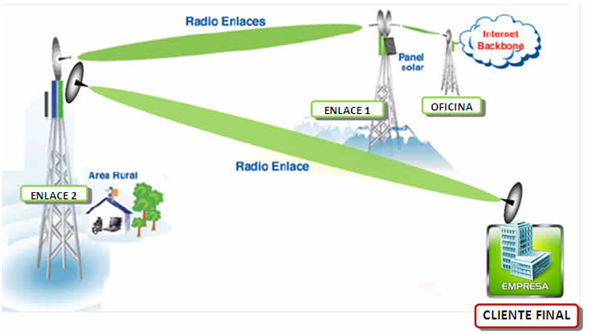
Tomada de: http://www.wisatcolombia.com/?page_id=551
En la gráfica la interconexión se hace mediante enlaces inalámbricos de la siguiente forma:
El nodo principal o Backbone se encuentra en la oficina que es el punto en donde llegan los proveedores de forma dedicada, luego mediante un enlace inalámbrico se llega al Enlace 1 luego al Enlace 2 luego al 3 y por último al cliente final dando por entendido que la información del suscriptor se trasporta bajo una única infraestructura denominado esto como Canal Dedicado.
RED DE TELEFONIA A TRAVES DE VoIP
En principio, el concepto de VoIP es la abreviación en inglés de Voice over IP (traducido es voz sobre protocolo IP) y se usa para identificar a la tecnología detrás de comunicaciones usando voz y vídeo a través de Protocolo Internet. El principio es esencialmente, la misma tecnología que se utiliza para transmisión de música por streaming en Internet. Un micrófono recoge el sonido de voz y la tarjeta de sonido lo digitaliza. El audio digitalizado se comprime con un códec de audio. Esto se hace eliminando los datos innecesarios, a la vez que se mantiene la legibilidad del audio, a fin de que el flujo, o stream, sea lo suficientemente compacto para enviarse por la red en tiempo real.Por supuesto, la calidad de la comunicación está directamente relacionada a la velocidad de la conexión a Internet que estén utilizando las personas involucradas.
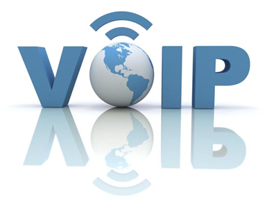
¿POR QUE USAR TELEFONIA IP?
La característica más importante de Voz sobre IP es el ahorro de costos. Las llamadas son enviadas sobre líneas de datos existentes, eliminando así las líneas telefónicas. De esta forma la distancia y duración de las llamadas ya no es relevante desde el punto de vista de costos. La razón es muy simple, usando VoIP los costos de infraestructura se reducen.
Conectividad: Usualmente puedes usar un servicio VoIP en dondequiera que estés, incluso algunos proveedores te dejan usar un número fijo que puedes llevar a donde quiera que estés. Todo lo que necesitas es una conexión a Internet.
Características: La mayoría de los proveedores de telefonía IP te dan los mismos servicios que el tradicional: identificador de llamadas, llamada en espera, llamada tripartita, etc.
VoIP utiliza conmutación por paquetes, lo que la hace más “inteligente” en el aprovechamiento de los recursos existentes (circuitos físicos y ancho de banda).
Esta característica (conmutación por paquetes) también tiene otra ventaja, que es la capacidad de los paquetes de voz “que elijan” el mejor camino entre dos puntos, teniendo siempre más de un camino, o ruta, disponible y, por lo tanto, con mayores opciones de llegar a destino (característica intrínseca de las redes IP).
¿QUE SE NECESITA PARA PODER USAR VoIP?
Para poder usar VoIP en una empresa tenemos varias posibilidades tanto soluciones por Hardware como Soluciones por Software.
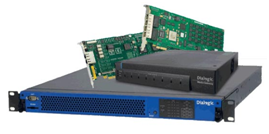
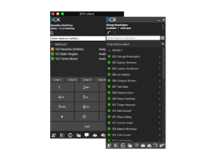
Los requisitos de un sistema de voz por IP (VoIP)dependerán de una lista de comprobación para asegurarse de que la red empresarial está preparada para este cambio.
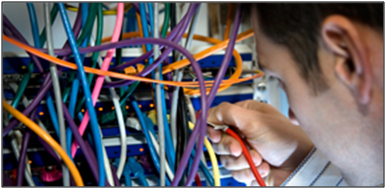
Cableado: ¿Se ha construido el segmento Ethernet con cable UTP de categoría 5 o superior y conexiones UT/RJ45?
¿El cableado termina en un espacio centralizado, cerca de los conmutadores?
¿Hay suficiente espacio de rack disponible?
Alimentación: ¿Proporcionan los conmutadores existentes PoE (alimentación por Ethernet) o se necesitarán inyectores de corriente?
Servidores DNS: ¿Hay servidores DNS accesibles en este segmento de red?
VLAN: ¿Pueden proporcionar una VLAN los conmutadores existentes?
Direccionamiento IP: ¿Cuenta el segmento LAN con un servidor DHCP?
Espacio de direcciones: ¿Tiene el servidor DHCP suficiente espacio de direcciones para todos los teléfonos IP?
Topografía: ¿Tiene un diagrama actualizado de la red en el que se muestren las direcciones y ubicaciones?
Documentación: Asegúrese de que existe documentación precisa sobre políticas de direccionamiento y configuración de VLAN.
Resiliencia: ¿Cuentan todos los dispositivos necesarios con alimentación de reserva por SAI o generador?
Conmutación: ¿Son compatibles todos los conmutadores y routers con precedencia IP o ToS?
Y COMO IMPLEMENTAR UNA SOLUCION (VoIP)?
Para nuestro propósito se recomienda que el departamento de T.I. realice esta evaluación lo más exacta posible, o en caso de que no se tenga el conocimiento o la experticia, es necesario solicitar que un proveedor experto y certificado evalué que tan viable es el cambio de tecnología tradicional a VoIP, haciendo una inversión razonable.
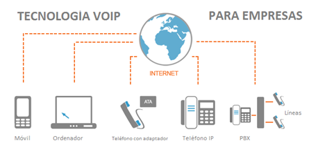
Hecha esta evaluación se planea ejecutar el siguiente plan de trabajo para conectar los edificios administrativos, Facultades, Rectoría y Biblioteca:
1. Compra de un conmutador IP - PBX para centralizar todas las comunicaciones. El PBX conecta las extensiones internas dentro de la Universidad y al mismo tiempo las conecta con la red pública conmutada, Proveedores VoIP y Troncales SIP.
2. Realizar un mantenimiento a la red de los centros de cableado.
3. Realizar los ajustes necesarios a la configuración de los routers o switches de red.
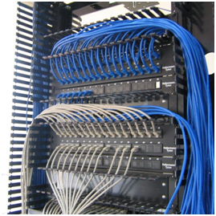
4. Configuración del Servicio DNS y DHCP para los equipos con VoIP.
5. Configuración de las VLANs necesarias para separar el tráfico de VoIP.
6. Adquisición de teléfonos IP para las oficinas principales y secretarias.
7. Instalación del software telefónico VoIP en los equipos o computadores que se ajusten al perfil.
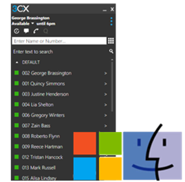
8. Asignación de las extensiones para todas las áreas y personal necesario.
9. Capacitaciones al personal sobre el manejo y ventajas de las llamadas VoIP.
RED INTELIGENTE CON REDES MOVILES
Sobre la red telefonica, hoy en dia, se ofrece no solo el servicio de telefonia basica, sino toda una extensa gama de nuevos y variados servicios que son de utilidad para una gran mayoria de sus usuarios residenciales y de negocios y que, al mismo tiempo, reportan importantes beneficios a los operadores, tanto por el propio coste del servicio como por el incremento en el numero de llamadas y el trafico que genera su utilizacion. Ello es posible gracias a la incorporacion de aplicaciones informaticas sobre nodos conectados a la infraestructura de conmutacion telefonica, que viene a configurar lo que se denomina Red Inteligente o IN (Intelligent Network), aunque mas apropiado seria emplear el termino de inteligencia en la red o network intelligence.
A la fecha, las nuevas tecnologias 4G han expandido las posibilidades y las disponibilidad de canales de comunicacion, los equipos actuales pueden operar simultaneamente amabas redes, dependiendo de la zona que se encuentre el usuario, rapidamente cambia la frecuencia de 3g a 4g, de manera inmediata de esta forma siempre se tendra comunicacion y datos, sin embargo sigue la limitante de la zona que abarca la antena satelital, en Colombia y en muchas partes rulares al no contara con receptores satelitales cercanos se dificulta la conexion, en algunos paises, la limitante de la antenas ha cambiado, ya que la mejor opcion les satelites en la atmosfera terrestre, que puede cubrir aun mas zonas y mejor calidad, dicha opciones se esta implementado poco a poco para poder llegar a mas lugares .
Mejoramiento de cobertura centro comercial unico
En la zona de sotano del sotano del centro comercial unico 1 , en esta zona que esta ubicados almacenes de motocicletas 2 bancos, gimnasio, y alkosto, la señal celular era nula, tanto clientes como empleados, se dificultaba trabajar y comunicarse en esa zona por dispositivos moviles y la opcion wifi no es la solucion, para solucionarlo se instalo un repetidor de señal en la entrada del sotano, el resultado, la señal 3g y 4g funciona muy bien, permitiendo el uso de datos y llamadas a celular.
PROBLEMATICA UNIVERSIDAD
Continuamos con el problema de modernizar y reorganizar la red para el campus universitario de la universidad estatal tomada como ejemplo en el trabajo colaborativo 1. Ahora en esta segunda parte del ejercicio deberá resolver los siguientes problemas de este caso de aplicación:
- La red informatica de la universidad, es una gran red plana, es decir no tiene una buena administracion.
- Hay conflictos con las direcciones IP
- Se tienen muchos servidores DHCP independientes
Solucion:
Con respecto a las Vlans para el caso de mejoras en campus universitario:
Primero se entiende que las Vlans son redes virtuales, al cual se puede asignar un segmento de red especifico, de esta manera, dentro de una red, subdividir direccionamiento y funciones, por ejemplo la red administrativas se configura en una vlan, con parámetros de red y permisos especiales, para el uso de web, carpetas compartidas impresoras en red, para que esto fusione, se requiere un firewall que se creen las vlans que se requieran, despues esto se configura swiches dependiendo del área, en el área administrativa, se asigna un segmento de red y con la configuración ip de cada equipo podrá tener los servicios disponible de la vlan administrativa , mismo ejercicio aplica a redes de sala de computo, y la redes wifi, se crean vlans que permitan navegar y controlar que funciones tendria cada red , un equipo para esta tarea sera presentado a continuacion .
MIKROTIK 1100X2AH
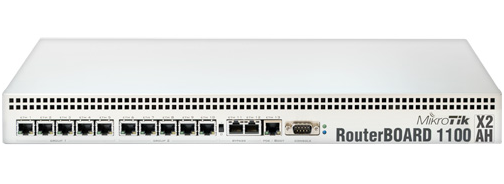
MilkroTik RouterOS es un sistema operativo basado en el kernel de Linux 2.6 usado en el ardware de los MicrotikRouterBOARD que es la división de hardware de la marca Mikrotik. Se caracteriza por poseer su propio S.O de fácil configuración. Estos dispositivos poseen la ventaja de tener una relación costo /beneficio muy alta.
Ahora, lo que hace interesante a un RouterOS es que puede ser instalado en una computadora, convirtiendola en un router con todas las caracteristicas necesarias: firewall, routing, punto de acceso wireless, administración de ancho de banda, servidor VPN y más.
CONFIGURACION
RouterOS soporta varios metodos de configuracion como son:
- Acceso local via teclado y monitor
- Consola serial con una terminal
- Acceso via Telnet y SSH via una red
- Una interfaz grafica llamada WinBox
Una API para el desarrollo de aplicaciones propias para la configuracion.
En caso de no contar con acceso local y existe un problema con las direcciones IP RouterOS soporta una conexion basada en direcciones MAC usando las herramientas customizadas Mac-Telnet y herramientas de Winbox.
A Partir de su versión RouterOS v4 agrega el lenguaje de Scripting Lua, que expande las posibilidades para programar y automatizar el sistema.
Vamos a ver ahora todos los features que nos brinda RouterOS, ya sea que lo usemos en un RouterBoard o en una PC.
FIREWALL
El firewall integrado implementa el filtrado de paquetes y provee funciones de seguridad que son usadas para el manejo del flujo de datos desde y hacia el router. Junto con el NAT, previene el acceso no autorizado a una red conectada directamente. Puede filtrar por direcciones IP, tuerto TCP/UDP, rango de puertos, protocolos, entre otros parametros.
Soporta ademas lista de direcciones estaticas y dinamicas y puede interceptar paquetes con un patron definido. Cuenta ademas con soporte para IPv6.
ROUTING
RouterOS soporta rutas estaticas y varios protocolos de rutas dinamicas.
Para IPv4 soporta RIPv1 y v2, OSPFv2, BGPv4
Para IPv6 soporta RIPng, OSPFVv3 y BGP
Tambien soporta VRF, politicas basadas en rutas, rutas basadas en interfaz y ECMP. Se puede utilizar el Firewall para marcar los paquetes que lleguen desde una conexion determinada y que estos salgan por un proveedor distinto.
MPLS
MPLS (MultiprotocolLabelSwitching), puede ser utilizado para reemplazar los paquetes IP salientes, la decision del reenvio ya no se realiza en base al header IP o tabla de enrutamiento, sino en etiquetas adjuntadas al paquete. Este acercamiento acelera el reenvio del paquete porque la busqueda del destino es mas simple que la busqueda del enrutamiento. La Eficiencia en el proceso de reenvio es el mayor beneficio de MPLS.
Algunos de los features de MPLS soportados son:
- Enlazado de etiquetas estaticas para IPv4
- Protocolo de distribucion de etiquetas para IPv4
- Tuneles RSVP
- Descubrimiento automatico y basado en la señalizacion VPLSMP-BGP
- MPLS IP VPN basado en MP-BGP
VPN
RouterOS soporta diversos metodos de conexion VPN para establecer una conexion segura sobre redes abiertas o internet. Estos metodos son:
- IPSec
- Tuneles de punto a punto (OpenVPN, PPTP, PPPoE, L2TP)
- Features avanzados PPP (MLPPP, BCP)
- Tuneles simples (IPIP, EoIP)
- Soporte a tuneles 6 a 4 (IPv6 sobre IPv4)
- VLAN
- VPN basado en MPLS
Nos permite interconectar de forma segura varias redes permitiendonos interconectar varias localidades, usar los recursos de la organizacion mientras nos movilizamos y aumentar la seguridad de nuestras conexiones inalambricas.
CONEXIONES INALAMBRICAS
Las siguientes son algunas de las tecnologias wireless soportadas:
- Punto de acceso y cliente inalambrico IEEE802.11a/b/g/n
- Protocolos propietarios Nstreme y Nstreme2
- Sondeo de clientes
- RTS/CTS
- Sistema de distribucion inalambrica
- Punto de acceso virtual
- Encriptacion WEP, WPA, WPA2
- Lista de control de acceso
- WMM
- Protocolo de ruteo inalambrico MME
- Entre otros
Los protocolos Nstreme le permiten a RouterOS extender el alcance y la velocidad de la conexion inalambrica cuando se utiliza los routers de Mikrotik en cada extremo. Soporta ademas NStreme dual que permite utilizar dos antenas en cada extremo, una para recibir y otra para enviar.
HOTSPOT
La puerta de enlace de Mikrotik Hotspot permite crear una red de acceso publico para usuarios alambricos e inalambricos. Al usuario le sera presentada una pantalla de login cuando accede al navegador web. Una vez provee credenciales validos se le dara acceso a internet. No es necesaria ninguna instalacion de un software, el hotspot dirigira cualquier conexion al formulario de login. Podemos administrar ademas las conexiones de los usuarios, uso de ancho de banda, tiempo de conexion y mas.
Hotspot soporta autenticacion standard de servidores RADIUS o el administrador de usuarios integrados que nos permite una administracion centralizada de todos los usuarios en nuestra red.
WEB PROXY
RouterOS cuenta con un servidor proxy para el almacenamiento en cache de recursos en la web, aumentando la velocidad de acceso entregando al cliente archivos en cache a la velocidad interna de la red. RouterOS provee las siguientes caracteristicas de un servidor proxy:
- Proxy HTTP regular
- Proxy transparente
- Lista de acceso por fuente, destino, URL o metodo solicitado
- Almacenamiento del cache en Discos externos
- Soporte a proxy SOCKS
Lista de acceso cache para especificar el recursos deben ser accedidos directamente y cuales via otro servidor, entre otros.
Finalmente RouterOS nos provee una serie de herramientas para administrar nuestra red y para optimizar las tareas. Algunas de estas son:
- Prueba de ancho de banda
- SSH
- Herramientas para el envio de Email y SMS
- Tabla de conexiones activas
- Servidor TFTP
- Servidor NTP
- SNMP
- RADIUS
RouterOS le agrega diversas funcionalidades a los mismo routers de Mikrotik como a cualquier PC que pudieramos tener por ahi sin uso y, que con este sistema operativo le podamos implementar alguna funcion. Y hablando directamente de los RouterBoards de Mikrotik, estos han mostrado ser eficientes y robustos en un ambiente critico de produccion.
RED INTELIGENTE EN EL CALL CENTER
Figura 1. Tomada de https://www.elblogdegerman.com/2013/06/05/atencion-al-cliente-en-entornos-2-0-del-call-center-al-contact-center-multicanal/
Se realizara la implementación de una red inteligente en el Call Center de la Universidad, tambien se van a interconectar todos los edificios de las Facultades, Rectoria, administrativos y laboratorios, de manera que cada vez que ingrese una llamada, un sistema de respuesta automatico reenviara la llamada a la extension correspondiente o ingresara al Call Center, donde los operadores resolveran las solicitudes que se esten realizando.
Se debe contar con un enrutador inteligente dentro de las herramientas del Call Center. El enrutador inteligente es quien ramifica el destino de la llamada en la direccion correcta, creando diferentes colas de llamadas para distribuirlas a los operadores cuyas capacidades correspondan a las necesidades especificas del cliente, dispone de la funcion que permite gestionar respuestas automatizadas mediante las IVR’s.
Infraestructura tecnologica.
Para continuar la implementacion del Sistema de Call Center instalaremos dos elementos:
El primer elemento de un sistema de Call Center es la central telefonica cuyo objetivo es conmutar las llamadas entre los clientes y los operadores.
Debe tener ACD (Automatic Call Distribution) para tener estadistica de la entrada de llamadas, marcadores progresivos o predictivo para hacer llamadas, grabacion de las llamadas y CTI que permite integrarse con la base de datos del cliente. (DYALOGO CBX).
Se realiza la configuracion de las “campañas”, es muy importante que el sistema tenga la capacidad de asignar llamadas a los operadores en igual cantidad, de manera uniforme y por otra parte que permita tener estadisticas como tiempo promedio de la llamada, llamadas perdidas, tiempos promedio de abandono, etc. El servidor ACD debe tener una dirección IP fija y reservada dentro de la red de datos y conectado al PBX.
Sistema IVR:
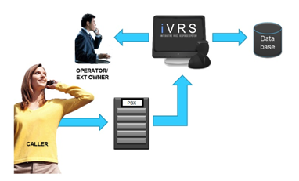
Figura 2 - flujo IVR. Tomada de http://www.telefonoip.it/menu-ivr-avanzati/
El IVR (Interactive Voice Response) es un Sistema de Audio Respuesta para agilizar la atencion de llamadas entrantes. Se contestan las llamadas de manera automatica, con un mensaje de voz que dicen "Gracias por llamar a la universidad Nacional Abierta y A Distancia, si conoce el numero de la extension marquelo a hora de lo contrario marque 654 para biblioteca, marque 656 para registro y control, marque 657 para soporte, etc. Marque 000 para ser atendido por uno de nuestros operadores, marque 111 para regresar al menu anterior".
El IVR es clave para suministrar informacion repetitiva 7 dias a la semana, 365 dias al año. Esta aplicacion se encuentra incluida en la solucion DYALOGO CBX.
Marcador progresivo, power o predictivo:
Hay muchos esquemas de marcacion de llamadas, basicamente son los mecanismos definidos para incrementar la velocidad.
Sistema de gestion:Este software es el encargado de registrar lo que pasa dentro de las llamadas, es decir, cuando la llamada en contestada, extension solicitada, encuestas de satisfaccion, etc.todo lo que se defina como exito dentro de una llamada.
De este tipo de software podemos tener las estadisticas de Bases de datos de los estudiantes, personal de planta y aspirantes:
Creada en un archivo de Excel, Access, MS SQL o cualquier repositorio donde este la informacion de los estudiantes, personal de planta y aspirantes con codigo, direccion, nombre, numeros telefonicos de contacto. Preferiblemente el equipo debe tener una dirección IP fija y reservada dentro de la red de datos.
Adicionalmente a la infraestructura tener la plataforma de callcenter dentro de la universidad tal como DYALOGO CBX y DYALOGO CRM.
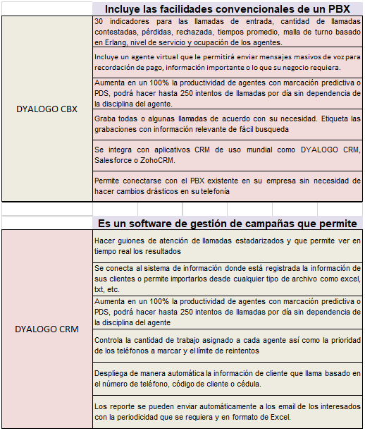
Tambien esta pensado en integrarse al servicio de Telefonia red Inteligente con los numeros 01800 en nuestro pais, asi podemos aprovechar algunas ventajas como:
- Autenticacion de llamadas: Posibilidad de llevar a cabo una validacion de la persona que llama mediante una clave de seguridad.
- Enrutamiento por menu: Con este servicio el usuario podra dirigirse a la seccion adecuada conforme con sus necesidades.
- Enrutamiento por horario: funcion donde se puede escoger en cual linea telefonica desea atender las llamadas dependiendo del dia y la hora en que son realizadas.
- Llamadas nacionales: Cubrir la mayor parte del pais con un solo numero nacional.
Infraestructura fisica.
Figura 3. Call Center. Tomada de https://medium.com/@aderesoapps/el-futuro-de-las-redes-sociales-en-la-industria-de-los-call-center-81059907a7b3
- Lineas telefonicas: Son los recursos de las empresas de telecomunicaciones por las que se reciben o hacen llamadas.
- Canal de internet o de datos: Es vital tener internet para acceso a aplicaciones de cliente, para soporte remoto de los usuarios y para hacer llamadas utilizando proveedores de voz sobre IP.
- Switch LAN QoS: En la actualidad la mayoria de call center son VoIP, eso que quiere decir, que el mismo cable donde se conectan los PC´s a internet o a la red tambien transporta la voz de las llamadas. El switch lo que hace es conectar todos los equipos que componen el Call Center. Es muy importante que tenga QoS o calidad de servicio para que la voz no se escuche entrecortada o con ecos.
- Cableado estructurado y electrico: Son los cables que conectan todos los computadores y como se alimentan de energia los computadores de los operadores.
- Puesto de operador: Debe tener un computador con procesador Intel preferiblemente y una diadema de computador USB.